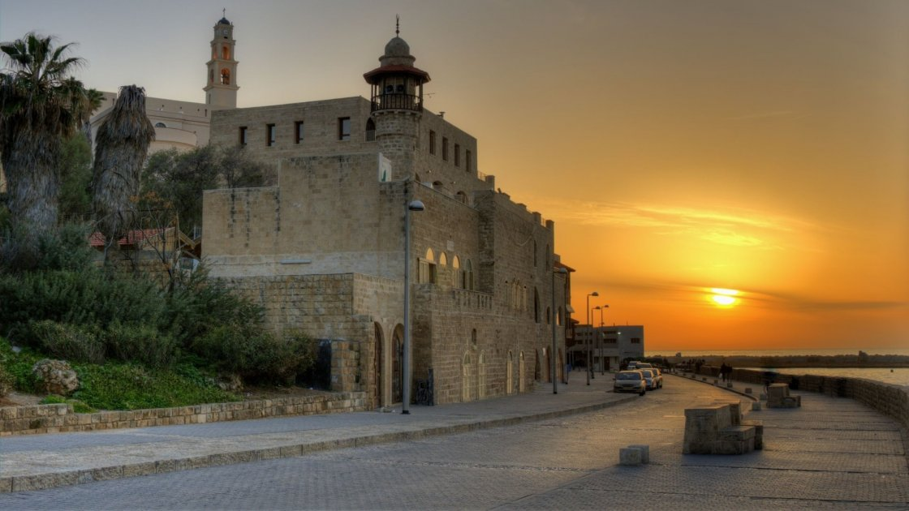
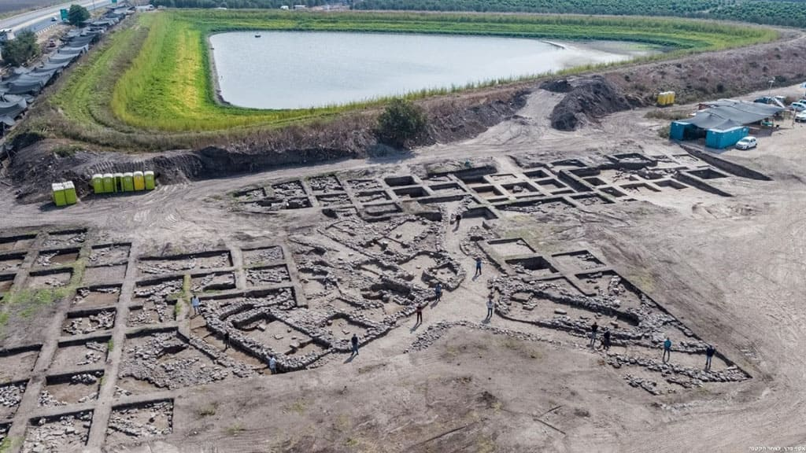

Тель-Авив-Яффа
ТЕЛЬ-АВИ́В-Я́ФФА (תֵּל אָבִיב-יָפוֹ, Тель-Авив-Яфо, в обиходной речи — Тель-Авив), город на Прибрежной равнине, второй в Израиле по численности населения (358,8 тыс. человек — начало 2003 г.), экономический и культурный центр страны. Как единый город существует с 1949 г., когда были объединены города Тель-Авив и Яффа.
Территория, топография, мегалополис
Тель-Авив-Яффа находится в центре приморской полосы страны. Размеры города: вдоль моря — 13,5 км, от моря до восточных окраин — от 3 до 6 км. Почва Тель-Авива-Яффы сложена в основном из гребней мергеля (куркар), частично покрытых красным песком (хамра); гребни создают обрывы у побережья, наиболее высокий из них — 25–30 м (место бывшей арабской деревни Шейх-Муаннис /Мунис/; район Тель-Авивского университета).
Река Яркон (на севере центральной части Тель-Авива-Яффы) пересекает город с востока на запад и впадает в море; ширина реки — 35–40 м, глубина — 3–4 м. Пересыхающий в летнее время поток Аялон, берущий начало в долине у Иудейских гор, прорезает город в его восточной части с юга на север и впадает в Яркон в 2,4 км от его устья. Многие из больших улиц Тель-Авива-Яффы параллельны морскому побережью, Яркону и Аялону.
Тель-Авив-Яффа граничит с рядом городов, фактически сливаясь с ними (Герцлия с севера, Бат-Ям с юга, Холон с юго-востока, Рамат-Ган и Гив‘атаим с востока). С востока к последним примыкают Бней-Брак и Петах-Тиква. Общее население так называемого внутреннего кольца мегалополиса приближается к миллиону (978 тыс. человек — начало 2003 г.). Принято считать, что во внешнее кольцо входят Кфар-Шмарьяху, Рамат-ха-Шарон, Ганней-Тиква, Гив‘ат-Шмуэль, Кирьят-Оно, Савион, Ор-Иехуда, Холон, Ришон-ле-Цион, Иехуд; общая численность населения мегалополиса значительно превышает миллион человек.
Среди населения собственно Тель-Авива-Яффы (см. выше) лишь 15 тыс. человек — неевреи (в основном арабы в Яффе, есть также армяне), таким образом его еврейское население многочисленнее, чем в любом другом городе страны. Среди арабов много христиан.
Исторический обзор
Яффа — древний город и, возможно, древнейший в мире порт. Во время основания Тель-Авива (1909) в Яффе проживало 40 тыс. человек, из них шесть тысяч евреев, которые основали еврейские кварталы Неве-Цедек (1887) и Неве-Шалом (1890). Подробнее см. Яффа.
В 1906 г. было создано общество Ахуззат-Баит, ставившее целью основание «еврейского центра городского типа». Во главе общества стоял Акива А. Вайс (1868–1947). Название Тель-Авив перекликается с названием города, упоминаемого в Библии (Иех. 3:15): так называлось еврейское поселение в Вавилонии.
Тель-Авив времен основания делился на несколько кварталов: на востоке Нахалат-Биньямин и Мерказ Ба‘алей-Млаха, на севере — Хевра-Хадаша (ныне улица Алленби) и Геулла — первый квартал Тель-Авива, выходящий к морю. К 1914 г. площадь Тель-Авива превысила 100 га, а население — две тысячи человек; в городе было 112 одноэтажных и 70 двухэтажных домов (всего 1424 комнаты).
Первая мировая война прервала рост города. Иностранные подданные были высланы из страны, а оставшиеся жители подвергались преследованиям турецких властей. 28 марта 1917 г. почти все евреи Тель-Авива, как и евреи Яффы, были изгнаны из города. Многие поселились в сельской местности, некоторые выехали в Дамаск и в Египет. Немногие оставшиеся организовали Эмигрантский комитет, заботившийся об имуществе изгнанных.
В ноябре 1917 г. английские войска заняли Тель-Авив-Яффу и вскоре изгнанные начали возвращаться. После 1919 г. многие репатрианты, прибывавшие с третьей алией, не найдя ни дома, ни работы, разбивали палатки на берегу моря и в других местах Тель-Авива. Из-за кровавых беспорядков, развязанных арабами в Яффе 1 мая 1921 г. (среди убитых был И. Х. Бреннер; см. также Израиль. Эрец-Исраэль. Исторический очерк. Период британского мандата), многие евреи бежали оттуда в Тель-Авив, что увеличило число палаточных городков. В том же месяце Тель-Авив был временно отделен от Яффы; в 1922 г. к городу присоединили шесть кварталов Яффы, в том числе Неве-Цедек и Неве-Шалом (см. выше). Население Тель-Авива достигло 15 тыс. человек В 1921 г. был избран первый мэр города. Им стал М. Дизенгоф, представитель правых фракций (Ха-Гуш ха-эзрахи) в городском совете. В 1923 г. заместителем мэра был избран член руководства партии Ахдут ха-‘авода Д. Блох-Блуменфельд (1884–1947). Вторым заместителем мэра в 1925 г. стал И. Роках (Ха-Гуш ха-эзрахи). В том же году М. Дизенгоф ушел в отставку из-за разногласий с представителями левых фракций по вопросам бюджета и образования. Обязанности мэра до следующих выборов исполнял Д. Блох-Блуменфельд. На выборах 1928 г. мэром вновь был избран М. Дизенгоф, остававшийся на этом посту до конца жизни.
В 1924 г. началась четвертая алия, что привело к развитию мелкой промышленности в Тель-Авиве. В 1925 г. его население достигло 34 тыс. человек. Возникли театры «Хабима» и «Кумкум», опера, организатором и первым дирижером которой был М. Голинкин. Тель-Авив рос на юг и на север (на востоке и юго-востоке город был ограничен арабскими деревнями Сумейл, Саламе и другими, а также немецкой колонией Сарона). Развитие приостановил экономический кризис 1926–29 гг.
Пятая алия вызвала новый расцвет города. В 1932 г. в Тель-Авиве состоялась первая Маккабиада. В 1934 г. неподалеку от реки Яркон была открыта Ярмарка Востока — специально оборудованный участок для проведения выставок и ярмарок. В 1936 г., в связи с нападениями арабов на еврейских репатриантов и блокированием ими грузовых поставок в Яффском порту, на севере города был открыт небольшой порт, предназначенный для приема лодок и других мелких судов, перевозивших грузы с судов, стоявших на якоре в открытом море (сейчас не действует). Был основан филармонический оркестр, заложен первый камень постоянного здания театра «Хабима». В архитектуре Тель-Авива в 1930-е гг. преобладал интернациональный стиль, который был местным вариантом модернистского направления в европейской архитектуре 1920–30-х гг.; ряд зданий построен с учетом концепций академии «Баухауз». В 1935 г. население города составляло 120 тыс. человек, а к 1939 г. достигло 160 тыс. человек, или 35,9% всего еврейского населения Эрец-Исраэль. Начавшаяся «нелегальная» иммиграция вызвала резкий конфликт с англичанами; первые суда («Тайгер хилл» и другие) бросали якорь вблизи берегов Тель-Авива.
Тель-Авив — первый еврейский город в Эрец-Исраэль в новое время, то есть город, основанный евреями и с момента своего основания населенный почти исключительно евреями, — с конца 1920-х гг. стал общественно-политическим, экономическим и культурным центром ишува. Здесь находились центральные учреждения Хистадрута, политических партий, молодежных движений, штаб Хаганы, командование Эцела (см. Иргун цваи леумми) и Лехи (см. Лохамей херут Исраэль), правления основных фирм и компаний, редакции газет, издательства, театры. В городе жили большинство писателей, художников и артистов страны. Деятельность муниципалитета, общественных и других учреждений и организаций, полиции, а также практически вся культурная жизнь в городе осуществлялась на иврите. Тель-Авив стал символом возрождения национальной жизни еврейского народа на его исторической родине.
Во время Второй мировой войны Тель-Авив дважды подвергался бомбардировкам военно-воздушных сил Италии (9 сентября 1940 г.; 117 убитых) и французского правительства Виши (11 июня 1941 г.; 20 убитых). Война приостановила строительство города, однако промышленность развивалась, некоторые предприятия стали поставщиками армий стран антигитлеровской коалиции. Улучшились пути сообщения; в 1942 г. в южном Тель-Авиве была открыта центральная автобусная станция. В 1943 г. верховный комиссар удвоил принадлежавшую Тель-Авиву площадь (с 630 га до 1260 га), включив в его пределы еще остававшиеся в составе Яффы еврейские кварталы на юге и пустующие земли на севере.
К началу Войны за Независимость в Тель-Авиве жили 210 тыс. человек. В первые месяцы войны яффские арабы обстреливали Тель-Авив. Положение изменилось после взятия Яффы еврейскими силами и ее капитуляции, подписанной в Тель-Авиве в штабе Хаганы 13 мая 1948 г. На следующий день в Тель-Авиве была провозглашена Декларация Независимости Израиля. В Тель-Авиве до 13 декабря 1949 г. работало первое правительство Израиля (размещалось на территории бывшей немецкой колонии Сарона) и заседал Кнесет 1-го созыва (в здании кинотеатра «Кесем»).
Археология
Раскопки в Тель-Авиве производились в основном на севере города, на северном берегу Яркона в районе Тель-Касила. На том же берегу возле устья Яркона обнаружены остатки крепости израильского периода, контролировавшей вход в реку. На южном берегу исследован холм Тель-Гриса (Ал-Джариша, он же Холм Наполеона) и его окрестности (возможно, библейский Гат-Риммон, ИбН. 19:45–46); найдены остатки сооружений каменного, бронзового и раннежелезного веков, укрепления гиксосов. На холме на площади Хилл (к югу от Яркона) найдены следы эпохи халколита и бронзового века. Обнаружены памятники периода Хасмонеев.